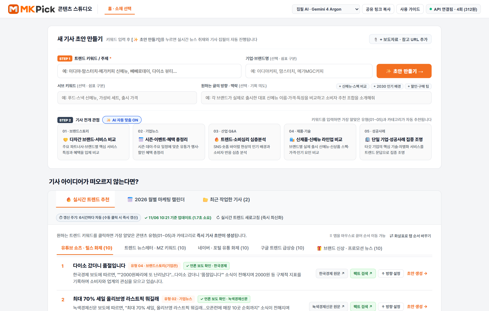
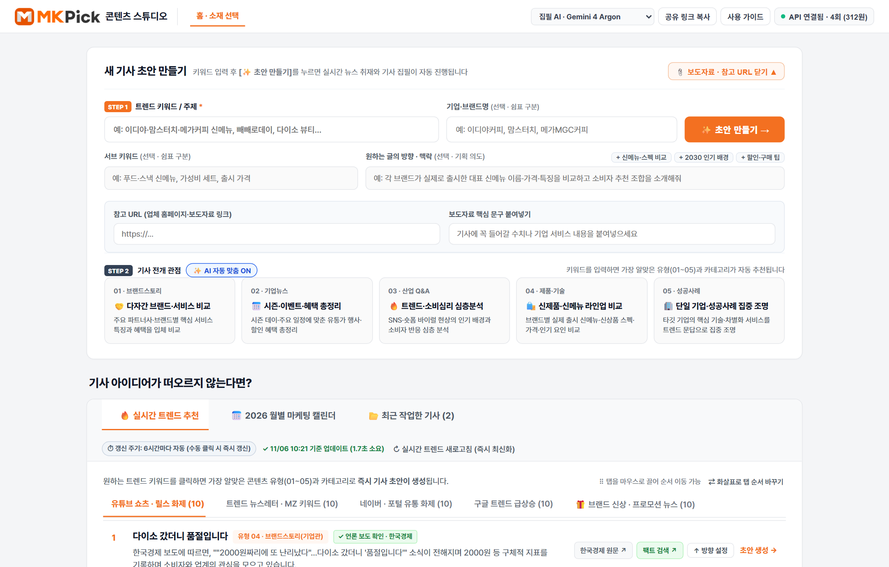
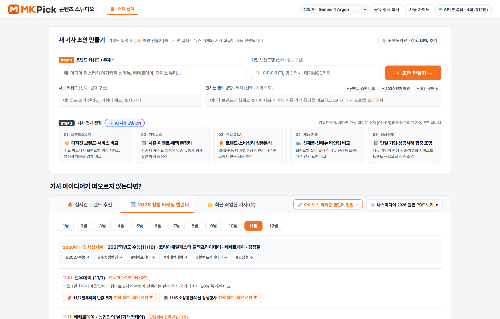
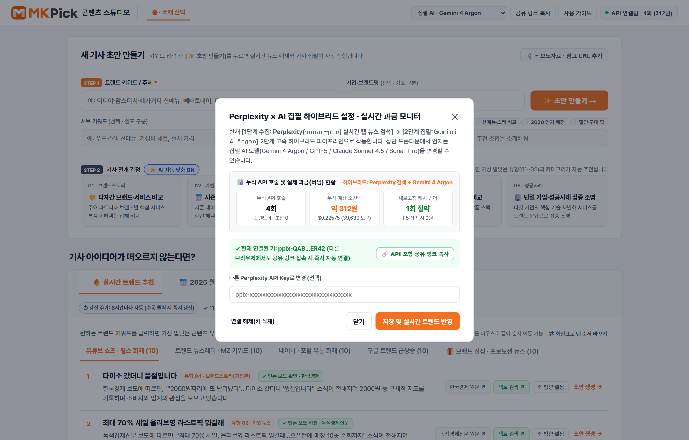
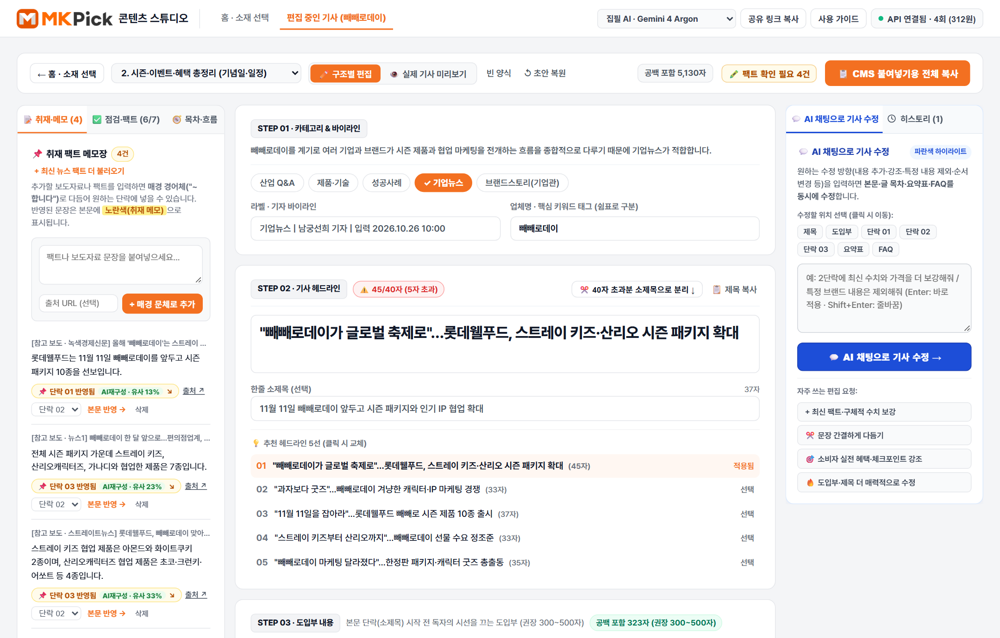
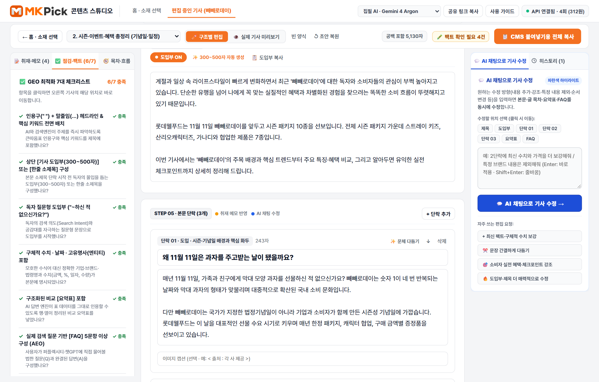
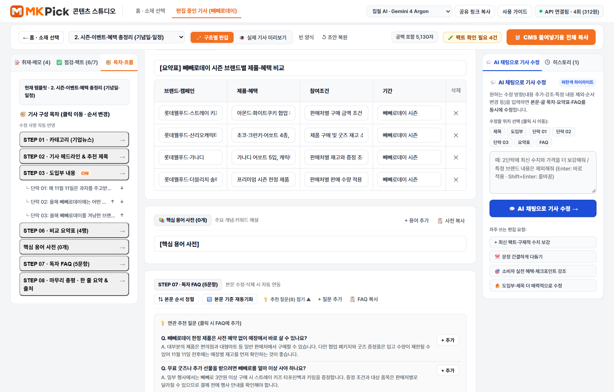
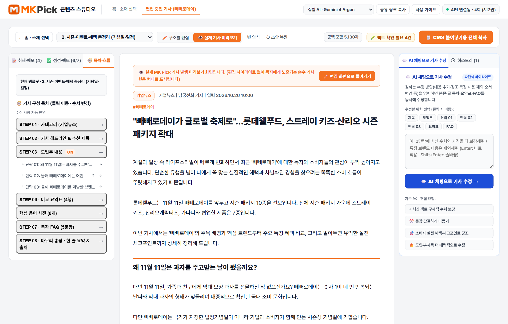

실시간 뉴스 팩트 수집부터 GEO·AEO 최적화 기사 집필, 원문·기보도 유사도 검증, AI 채팅 부분 수정, CMS 출고까지 한 화면에서 완결합니다.
sonar-pro가 최신 뉴스·원문 링크를 수집하고, 2단계 선택 모델(Gemini 4 / GPT-5 / Claude)이 매거진 문체로 집필합니다.v1~vN)를 원클릭으로 되돌릴 수 있습니다.v1~vN) 자동 백업·복원상단 [새 기사 초안 만들기] 통합 카드와 하단 [소재 발굴 & 작업 보관함] 3대 탭 카드로 직관적이게 구성되어 있습니다.

서브 키워드와 작성 방향(빠른 칩 지원)을 지정하면 고정 템플릿 없이 주제 맞춤형 매거진 기사가 작성됩니다.

+ 신메뉴·스펙 비교, + 2030 인기 배경, + 할인·구매 팁 클릭 시 기획 의도가 자동 입력됩니다.⏹ 중단 버튼이나 하단 배너로 즉시 취소할 수 있습니다.
| 전개 관점 (01~05) | 추천 카테고리 | 본문 4단락 매거진 전개 구조 및 핵심 특징 | FAQ 수 |
|---|---|---|---|
| 01. 다자간 브랜드 비교 유료 타겟팅·비교 기획 |
브랜드스토리 | ① 소비자 고민·트렌드 배경 → ②~③ 실제 기업·서비스별 혜택·차별점 실명 비교 → ④ 선택 체크포인트 | 7문항 |
| 02. 시즌 · 기념일 기획 기념일·주요 일정 맞춤 |
기업뉴스 | ① 기념일 유래·배경 화두 → ②~③ 시즌 핵심 이슈 및 참여 브랜드별 프로모션·캠페인 → ④ 참여·활용 팁 | 5문항 |
| 03. 트렌드 · 이슈 심층 숏폼·MZ 소비 현상 분석 |
산업 Q&A | ① 왜 지금 화제인지 배경 정의 → ②~③ 최신 보도 사례·수치·MZ 소비 심리 심층 분석 → ④ 전망 및 가이드 | 5문항 |
| 04. 신제품 · 라이프스타일 신상·팝업·프로모션 |
제품·기술 | ① 출시 배경·핵심 콘셉트 → ②~③ 대표 신메뉴·신상품 실제 명칭·가격·특징 비교 → ④ 구매처·할인 팁 | 5문항 |
| 05. 영업 기업 집중 조명 타깃 기업 솔루션 브랜딩 |
성공사례 | ① 시장 페인포인트 문답(Q1~Q4) → ② 선택 기준(Q5~Q6) → ③~④ 타깃 기업의 핵심 솔루션·경쟁력 집중 조명 | 7문항 |
최근 7일 내 실제 언론 보도로 검증된 5개 탭 × 10개(총 50선) 최신 이슈를 제공하며, 6시간 주기로 자동 최신화됩니다.
MM/DD HH:MM 기준 업데이트 시각 상시 표기)
[언론사 원문 ↗] & [팩트 검색 ↗]: 보도 원문 열람 및 네이버 뉴스 교차 확인[↑ 방향 설정]: 곧바로 생성하지 않고 상단 STEP 1 입력창으로 키워드를 올려 서브 키워드·방향을 추가 입력할 때 사용월별 기념일·시즌 이슈를 클릭해 인라인으로 기획 방향을 설정하고, 작업했던 모든 기사를 안전하게 이어서 편집합니다.

1월~12월) 선택 시 해당 월의 핵심 마케팅 테마와 4대 업종별(식음료·쇼핑·생활·여가) 추천 기획 아이템이 표시되며, 클릭 시 즉시 기획 입력창과 연동됩니다.
11.11 빼빼로데이 / 농업인의 날)을 클릭하면 바로 아래에 인라인 기획 설정창이 열립니다. 같은 날짜의 다른 기념일을 + 함께 엮기로 서브 키워드에 추가하거나 작성 방향을 적은 뒤 ⚡ 바로 초안 생성 또는 ✨ 맞춤 초안 생성 →을 선택할 수 있습니다.
상단 드롭다운에서 5종의 최신 집필 AI 모델을 자유롭게 변경할 수 있으며, 원클릭 공유 링크로 팀원 누구나 즉시 연결됩니다.

집필 AI 모델 선택 드롭다운 (5종 실시간 전환)sonar-pro)가 수행하고, 2단계 본문 집필 모델을 선택할 수 있습니다:좌측 [취재·검증·목차 패널] + 중앙 [STEP 01~08 에디터] + 우측 [AI 채팅 수정 & 히스토리 패널]의 3단 워크스테이션 구조입니다.

🖍️ 팩트 확인 필요 N건 배지 클릭 시 좌측 팩트체크 탭으로 즉시 이동합니다.
원문 기사에서 발췌한 2~3문장 핵심 팩트가 어느 본문 단락의 어떤 문장으로 재구성되었는지 1:1로 투명하게 대조합니다.
+ 최신 뉴스 팩트 더 불러오기 (원문 핵심 팩트 2~3문장 + 실제 기사 링크)~합니다)로 자동 패러프레이징되며, 원하는 단락(단락 01~04)을 골라 본문 반영 →으로 즉시 삽입합니다.
[📌 취재 메모 반영] 1:1 문장 비교 박스[본문에서 빼기 ✕]로 즉시 제거할 수도 있습니다.
취재 원문과의 문장 유사도는 물론, 외부 기보도 뉴스 검색 및 원본 보도자료 붙여넣기 대조까지 앱 안에서 한 번에 검증합니다.

독창성 88% · 복붙 0건)와 단락별 최고 유사도를 진단합니다. 유사도가 가장 높은 문장은 ✨ 이 문장만 즉시 재작성 버튼으로 1초 만에 다르게 고쳐 쓸 수 있습니다.
일괄 확인 완료 ✓)로 전환합니다.
STEP 02의 한줄 소제목(부제)과 STEP 03의 매거진 도입부 내용(300~500자, ON/OFF 가능)으로 기사 완성도를 높입니다.
✂️ 40자 초과분 소제목으로 분리 & 한줄 소제목 · 추천 5선[✂️ 40자 초과분 소제목으로 분리 ↓] 버튼으로 뒷부분을 아래 한줄 소제목 칸으로 자동 분리할 수 있습니다.도입부 OFF 토글 버튼으로 언제든 켜거나 끌 수 있으며, [✨ 300~500자 자동 생성]으로 즉시 재작성할 수 있습니다.
~합니다)로 자동 교정합니다. 취재 메모가 반영된 단락은 하단 노란색 박스에서 원문과 1:1로 비교할 수 있습니다.
AI 검색엔진이 가장 선호하는 구조화 비교표, 핵심 용어 사전, 문맥순 FAQ, 검증 출처 목록을 손쉽게 편집합니다.

📋 요약표만 복사[+ 열 추가], 행/열 삭제 버튼으로 자유롭게 편집할 수 있습니다.
[용어사전 ON/OFF] 버튼으로 포함 여부를 선택할 수 있습니다."한 줄 요약!", 그리고 실제 수집된 참고 자료 및 실시간 검증 출처 목록이 표시됩니다. 각 출처의 [원문 열기 ↗]로 기사를 확인하거나 체크박스로 CMS 복사 포함 여부를 제어합니다.
기사를 처음부터 다시 생성할 필요 없이 우측 AI 채팅으로 원하는 부분만 즉시 다듬고, 모든 수정 버전을 자유롭게 오갑니다.

더 친근하고 읽기 쉽게, 수치·팩트 보강, 요약표-본문 일치 보강, 분량 10% 줄이기 등 원클릭 요청 칩 제공v1 초기 초안부터 AI 채팅 수정본, 직접 편집본까지 모든 버전이 시간순으로 자동 기록됩니다. 원하는 버전 카드의 이 버전으로 복원을 누르면 언제든 해당 시점의 원고로 즉시 되돌아갑니다.
Ctrl + V로 바로 붙여넣으면 출고 준비가 완료됩니다!